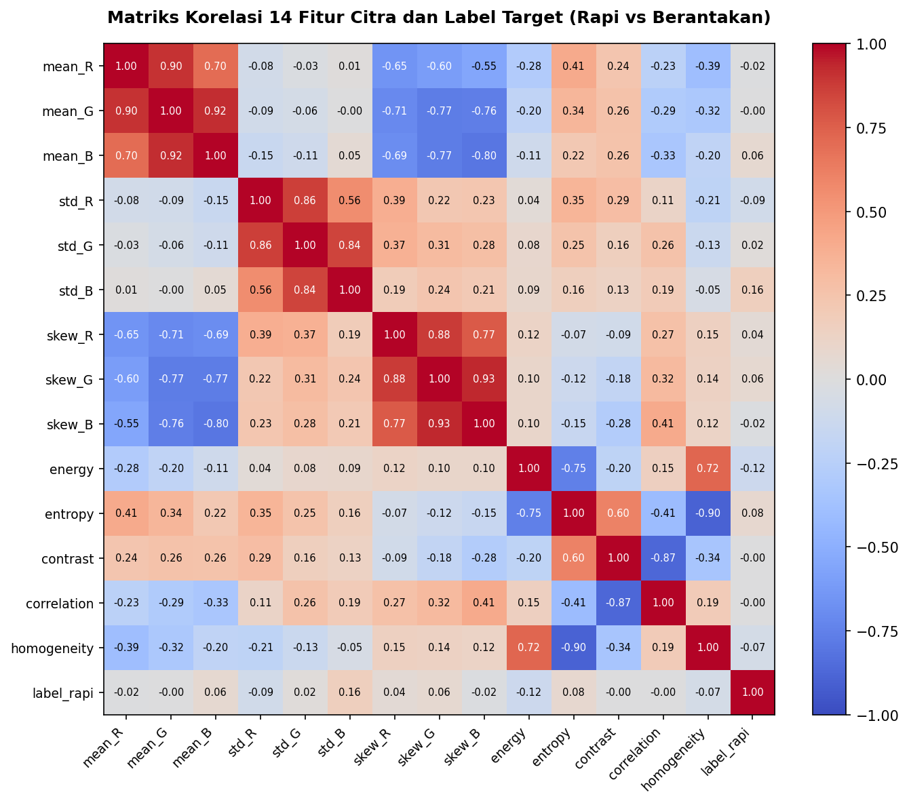
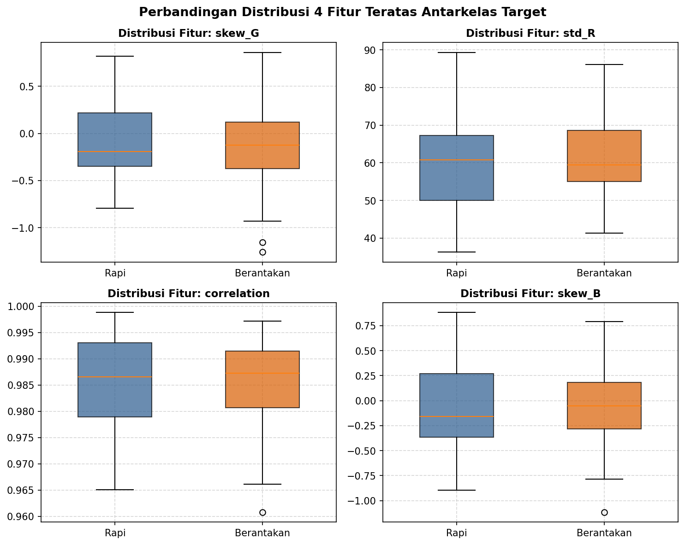
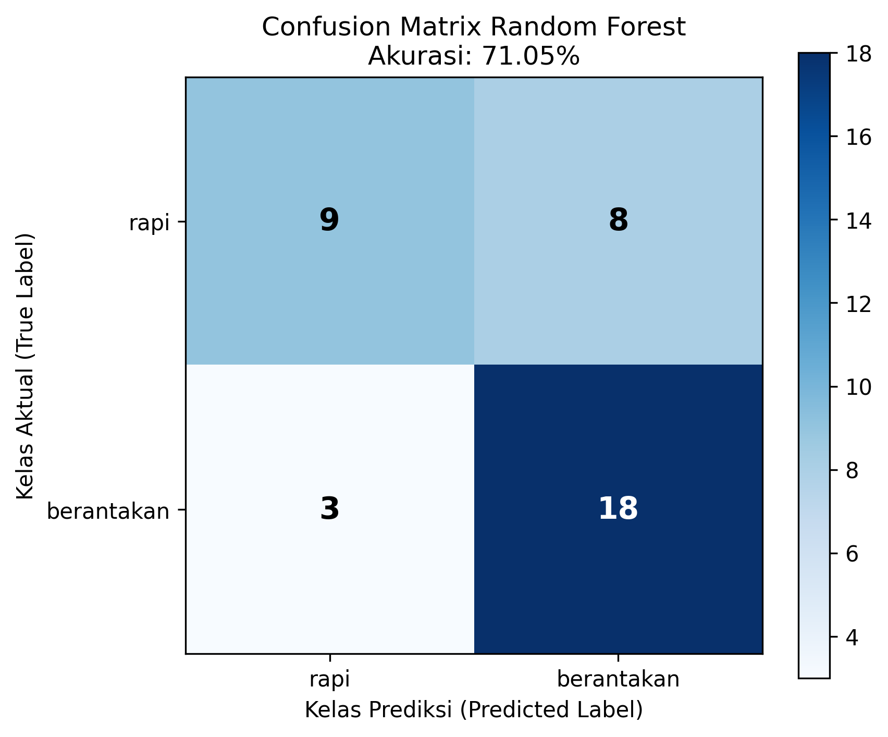
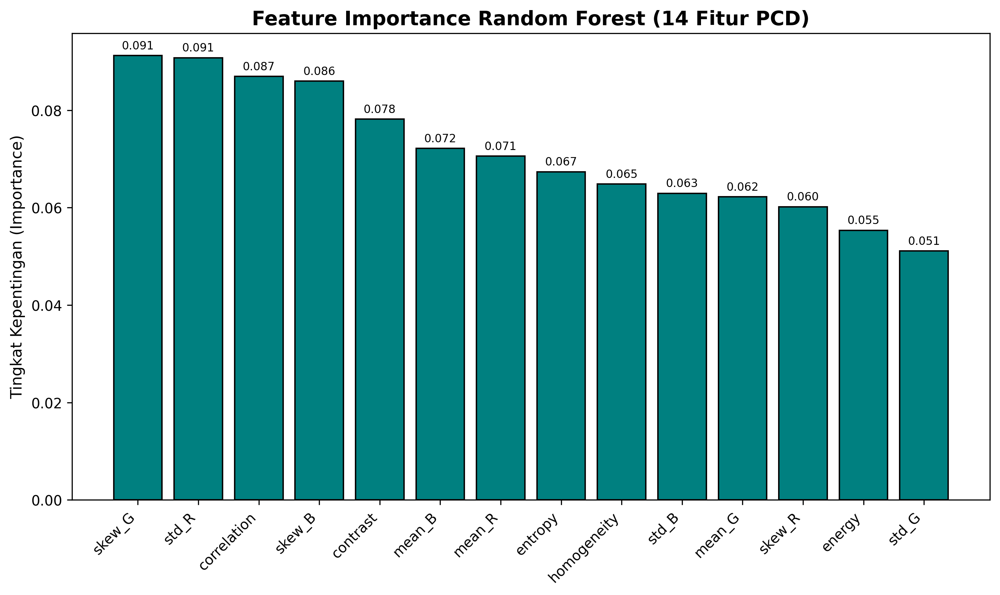

Klasifikasi Citra Susunan Sepatu#
Selamat datang di dokumentasi proyek Klasifikasi Citra Susunan Sepatu Rapi dan Berantakan. Dokumentasi ini menyajikan alur komprehensif penelitian berbasis Digital Image Processing (Pengolahan Citra Digital) dan Machine Learning untuk mendeteksi serta mengklasifikasikan keteraturan susunan sepatu ke dalam dua kategori, yaitu Rapi (tidy) dan Berantakan (messy).
Dokumentasi ini disusun secara terpadu, menyajikan landasan teoretis, implementasi kode Python asli yang digunakan dalam proyek, analisis statistik eksploratif (EDA), hasil evaluasi model, serta rangkuman kemungkinan pertanyaan ujian/presentasi beserta jawabannya.
1. Business Understanding#
1.1 Latar Belakang#
Penataan alas kaki, khususnya sepatu, merupakan salah satu cerminan budaya kerapian, kedisiplinan, kebersihan, dan efisiensi pemanfaatan ruang. Kondisi susunan sepatu dapat dijumpai pada berbagai lingkungan, mulai dari hunian pribadi, asrama, tempat ibadah (seperti masjid), ruang kelas, laboratorium, hingga perkantoran. Pada tempat-tempat dengan lalu lintas orang yang padat, sepatu sering kali dilepas dan diletakkan secara tergesa-gesa sehingga menimbulkan ketidakteraturan visual, memakan ruang lantai, serta menyulitkan pemiliknya saat hendak mengambil kembali sepatu mereka.
Secara tradisional, penilaian kerapian susunan sepatu dilakukan secara visual oleh persepsi manusia (human visual inspection). Namun, penilaian manual memiliki sejumlah keterbatasan:
Subjektivitas Tinggi: Ambang batas kerapian bervariasi antarindividu; susunan yang dianggap cukup rapi oleh satu orang bisa dinilai berantakan oleh orang lain.
Tidak Bersifat Real-Time: Diperlukan kehadiran fisik manusia untuk melakukan pemantauan berulang secara periodik.
Keterbatasan Skalabilitas: Pemantauan manual tidak praktis jika diterapkan pada fasilitas publik berskala besar dengan puluhan hingga ratusan pasang sepatu.
Perkembangan teknologi visi komputer (computer vision) dan pembelajaran mesin (machine learning) membuka peluang untuk mengotomatisasi penilaian visual ini melalui analisis citra digital. Dengan mengekstraksi parameter kuantitatif berupa karakteristik warna dan pola tekstur dari foto susunan sepatu, sistem dapat dilatih untuk mengenali pola keteraturan secara objektif, konsisten, dan terotomatisasi.
1.2 Rumusan Masalah#
Pengembangan sistem klasifikasi otomatis untuk susunan sepatu menghadapi tantangan visual yang kompleks:
Heterogenitas Objek: Sepatu memiliki variasi warna, model (sneakers, pantofel, sandal, boots), ukuran, dan bahan (kulit, kain, karet) yang sangat beragam.
Variasi Pencahayaan dan Sudut Pengambilan: Foto diambil pada kondisi cahaya ruangan yang bervariasi (terang, temaram, bayangan tajam) dan sudut pandang kamera (viewing angles) yang beragam (sudut atas/top-down maupun sudut miring/perspective).
Pencegahan Kebocoran Data (Data Leakage): Dataset yang dikumpulkan mencakup foto berurutan (burst shots) dan salinan file identik. Jika foto yang sangat mirip terdistribusi ke data latih (training) dan data uji (testing) secara acak, model akan mengalami overfitting semu dan evaluasi performa tidak lagi valid.
1.3 Tujuan Proyek#
Tujuan yang dicapai dalam penelitian ini adalah:
Membangun representasi fitur kuantitatif dari citra sepatu menggunakan kombinasi 9 fitur statistik warna RGB (Mean, Standard Deviation, dan Skewness) serta 5 fitur tekstur GLCM (Energy, Entropy, Contrast, Correlation, dan Homogeneity).
Membentuk dataset terstruktur berdimensi 200 baris data dengan 14 fitur prediktor numerik dan 1 kolom target kelas biner (
rapivsberantakan).Menerapkan strategi isolasi kelompok duplikasi citra menggunakan Disjoint-Set Union (DSU) dan
StratifiedGroupKFolduntuk menjamin Zero Data Leakage antara data latih dan uji.Melatih algoritma klasifikasi ensemble Random Forest (\(100\text{ trees}\),
random_state = 14) untuk memisahkan kedua kelas.Mengevaluasi performa model secara komprehensif menggunakan matriks akurasi, presisi makro, recall makro, F1-score, visualisasi Confusion Matrix, dan analisis Feature Importance.
1.4 Manfaat Penelitian#
Akademis: Memberikan studi komparatif dan bukti empiris mengenai kontribusi fitur warna orde pertama (first-order color statistics) dan fitur tekstur spasial orde kedua (second-order texture GLCM) pada domain klasifikasi keteraturan objek 3D.
Praktis: Menjadi modul algoritma dasar yang dapat diintegrasikan pada sistem Smart Rack berbasis IoT (Internet of Things), sistem monitoring fasilitas publik, atau aplikasi asrama cerdas untuk memberi notifikasi visual ketika area sepatu membutuhkan penataan ulang.
2. Data Understanding#
2.1 Spesifikasi dan Sumber Dataset#
Dataset yang digunakan dalam penelitian ini merupakan dataset citra primer yang berfokus secara eksklusif pada objek susunan sepatu di lantai/rak, bukan ruangan secara luas ataupun objek lainnya.
Parameter Dataset |
Spesifikasi Teknis |
|---|---|
Jumlah Total Sampel |
200 citra |
Keseimbangan Kelas |
Seimbang sempurna: 100 citra |
Format Berkas Asli |
JPG, JPEG, dan HEIC (High Efficiency Image Container) |
Representasi Warna |
RGB (Red, Green, Blue) 3 channel |
Kedalaman Bit |
8-bit per channel (rentang intensitas 0 hingga 255) |
Direktori Sumber |
|
2.2 Distribusi Ekstensi Berkas per Kategori#
Citra dikumpulkan dari berbagai perangkat ponsel pintar modern, menghasilkan variasi format file:
Kategori Rapi (100 berkas): 71 berkas
.jpg, 26 berkas.jpeg, 3 berkas.heic.Kategori Berantakan (100 berkas): 63 berkas
.jpg, 34 berkas.jpeg, 3 berkas.heic.
Dekode berkas .heic ditangani menggunakan pustaka pillow-heif yang terintegrasi dengan PIL.Image, sehingga pembacaan seluruh citra dapat berjalan mulus tanpa kegagalan (0 file rusak).
2.3 Analisis Duplikasi Citra dan Kemiripan Visual#
Pemeriksaan kualitas citra dilakukan secara komprehensif untuk mendeteksi duplikasi langsung maupun foto berurutan (burst):
Pemeriksaan MD5 Checksum (Duplikasi Biner Identik): Ditemukan 9 kelompok file biner identik (MD5 checksum sama persis) yang berasal dari salinan file berulang:
5 kelompok pada kategori rapi (misalnya
24-007 Rapi 3.jpgidentik dengan24-115 Rapi 3.jpg).4 kelompok pada kategori berantakan (misalnya
24-003 Berantakan 2.jpgidentik dengan24-034 Berantakan 3.jpg).
Pemeriksaan Perseptual dHash (Kemiripan Visual): Difference Hash (dHash) 64-bit dihitung dengan mengubah ukuran citra ke \(9 \times 8\) piksel grayscale lalu membandingkan gradien horizontal antar piksel bertetangga.
Jarak Hamming = 0 (Identik Visual): Ditemukan 19 pasangan citra, termasuk pasangan file berformat HEIC dan JPG dengan isi visual sama persis (misalnya
24-007 Rapi 1.heicdan24-007 Rapi 1.jpg).Jarak Hamming 1 s/d 5 (Sangat Mirip / Burst Photos): Ditemukan 6 pasangan citra beruntun, misalnya
kosong 10.jpg\(\leftrightarrow\)kosong 11.jpg(jarak Hamming 2), dan satu pasangan lintas kelas dengan jarak Hamming 5 (24-137 rapi 3.jpg\(\leftrightarrow\)24-137 berantakan 2.jpeg).
Seluruh pasangan duplikasi dan kemiripan ini dicatat dalam output/laporan_duplikasi_dataset.json dan digunakan pada tahap partisi data agar tidak menimbulkan bias evaluasi.
3. Data Preparation#
Tahap persiapan data bertujuan mentransformasikan koleksi citra mentah menjadi struktur data tabular yang siap diproses:
3.1 Pembacaan dan Standardisasi Ruang Warna#
Citra yang diunggah dari ponsel cerdas dapat memiliki format bervariasi (JPG, JPEG, HEIC) serta mode ruang warna yang berbeda (misal memiliki kanal transparansi RGBA). Pustaka pillow_heif didaftarkan terlebih dahulu ke sistem PIL agar berkas .heic dapat dibuka secara transparan, kemudian seluruh citra dipastikan berada dalam mode warna RGB 3-channel:
import numpy as np
from PIL import Image
import pillow_heif
# Registrasi plugin heif agar PIL mampu membaca file berekstensi .heic
pillow_heif.register_heif_opener()
def read_and_standardize_image(file_path):
"""
Membaca berkas citra berbagai format dan menstandardisasi ke format RGB 8-bit.
"""
with Image.open(file_path) as img:
# Konversi eksplisit ke RGB 3-channel (mengeliminasi kanal Alpha jika ada)
rgb_img = img.convert('RGB')
img_array = np.array(rgb_img, dtype=np.uint8)
# Validasi bentuk array: Tinggi x Lebar x 3 kanal
if len(img_array.shape) != 3 or img_array.shape[2] != 3:
raise ValueError(f"Dimensi citra tidak valid: {img_array.shape}")
return rgb_img, img_array
Penjelasan Parameter dan Fungsi:
pillow_heif.register_heif_opener(): Menghubungkan parser libheif ke Pillow. Tanpa pemanggilan ini, fungsiImage.open()akan melemparkan kesalahanUnidentifiedImageErrorpada berkas HEIC..convert('RGB'): Memastikan setiap citra memiliki tepat 3 matriks channel (Red, Green, Blue) berkodeuint8dengan rentang \([0, 255]\).
3.2 Partisi Data Bebas Kebocoran (Zero Data Leakage Splitting)#
Jika data dibagi menggunakan teknik random train-test split konvensional, citra yang berasal dari kelompok duplikasi atau burst yang sama dapat terpecah ke dalam set pelatihan dan set pengujian sekaligus, sehingga model dapat “menghafal” citra uji tersebut.
Untuk mengatasinya, diterapkan algoritma Disjoint-Set Union (Union-Find) berdasarkan rekaman metadata duplikasi:
import json
import numpy as np
import pandas as pd
from sklearn.model_selection import StratifiedGroupKFold
def build_duplicate_groups(meta_list, dup_data):
"""
Membangun kelompok komponen terhubung (Disjoint-Set Union)
berdasarkan duplikasi MD5 identik dan dHash (Hamming <= 5).
"""
parent = list(range(len(meta_list)))
def find(i):
if parent[i] == i:
return i
parent[i] = find(parent[i])
return parent[i]
def union(i, j):
root_i = find(i)
root_j = find(j)
if root_i != root_j:
parent[root_i] = root_j
fn_to_idx = {(m['filename'], m['label']): i for i, m in enumerate(meta_list)}
# 1. Gabungkan duplikasi biner MD5
for g in dup_data.get('duplikasi_md5_exact', []):
files = g['files']
for k in range(len(files) - 1):
i1 = fn_to_idx.get((files[k]['filename'], files[k]['label']))
i2 = fn_to_idx.get((files[k+1]['filename'], files[k+1]['label']))
if i1 is not None and i2 is not None:
union(i1, i2)
# 2. Gabungkan kemiripan visual dHash (Hamming <= 5)
for p in dup_data.get('kemiripan_visual_dhash', []):
i1 = fn_to_idx.get((p['file1']['filename'], p['file1']['label']))
i2 = fn_to_idx.get((p['file2']['filename'], p['file2']['label']))
if i1 is not None and i2 is not None:
union(i1, i2)
# Setiap citra mendapat ID grup independen
groups = np.array([find(i) for i in range(len(meta_list))])
return groups
# 1. Baca metadata duplikasi dan bangun ID kelompok independen
with open("output/laporan_duplikasi_dataset.json", "r", encoding="utf-8") as f:
dup_data = json.load(f)
meta_list = dup_data.get("metadata_file", [])
groups = build_duplicate_groups(meta_list, dup_data)
# 2. Baca dataset fitur citra dan pisahkan fitur X serta target y
df = pd.read_csv("output/dataset_fitur_citra.csv")
X = df.drop(columns=['label'])
y = df['label']
# 3. Pembagian data: Stratified Group K-Fold (5-Fold, rasio 80:20)
sgkf = StratifiedGroupKFold(n_splits=5, shuffle=True, random_state=14)
train_idx, test_idx = next(sgkf.split(X, y, groups))
X_train, X_test = X.iloc[train_idx], X.iloc[test_idx]
y_train, y_test = y.iloc[train_idx], y.iloc[test_idx]
Hasil Partisi Data:
Kelompok Independen: 177 kelompok unik dari 200 citra.
Data Training: 162 sampel (81,0%) — 83
rapidan 79berantakan.Data Testing: 38 sampel (19,0%) — 17
rapidan 21berantakan.Data Leakage: 0 grup yang tumpang tindih (Zero Leakage).
4. Ekstraksi Fitur Citra RGB#
4.1 Relevansi Warna pada Keteraturan Sepatu#
Karakteristik warna mencerminkan komposisi spektral citra. Pada susunan sepatu yang rapi, sepatu umumnya ditata berpasangan sejajar dengan orientasi yang seragam. Pola penataan ini menciptakan zonasi warna yang teratur antara permukaan rak/lantai dan bagian atas sepatu. Sebaliknya, pada susunan yang berantakan, sepatu bertumpuk pada sudut acak, memperlihatkan bagian sol bawah yang kotor, bagian dalam sepatu, serta menimbulkan bayangan-bayangan lokal yang tidak beraturan.
4.2 Tiga Besaran Statistik Warna per Kanal#
Citra RGB berukuran \(M \times N\) didekomposisi menjadi tiga kanal independen \(I_R\), \(I_G\), dan \(I_B\). Pada setiap kanal \(c \in \{R, G, B\}\), dihitung tiga besaran statistik:
Mean (Rata-rata Intensitas): $\( \mu_c = \frac{1}{M \cdot N} \sum_{i=1}^{M} \sum_{j=1}^{N} I_c(i, j) \)$ Mengukur intensitas kecerahan rata-rata pada kanal warna terkait.
Standard Deviation (Standar Deviasi): $\( \sigma_c = \sqrt{\frac{1}{M \cdot N} \sum_{i=1}^{M} \sum_{j=1}^{N} \left(I_c(i, j) - \mu_c\right)^2} \)$ Mengukur dispersi atau variasi sebaran nilai piksel di sekitar rata-rata. Nilai standar deviasi yang besar menandakan kontras warna yang tinggi antarbagian objek.
Skewness (Kemencengan Distribusi): $\( \gamma_c = \frac{\frac{1}{M \cdot N} \sum_{i=1}^{M} \sum_{j=1}^{N} \left(I_c(i, j) - \mu_c\right)^3}{\sigma_c^3} \)$ Mengukur asimetri distribusi intensitas piksel terhadap nilai rata-ratanya:
\(\gamma_c > 0\): Ekor distribusi condong ke intensitas tinggi (sebagian besar piksel berada di area gelap/redup).
\(\gamma_c < 0\): Ekor distribusi condong ke intensitas rendah (sebagian besar piksel berada di area terang).
\(\gamma_c \approx 0\): Distribusi intensitas relatif simetris.
4.3 Implementasi Kode Ekstraksi Fitur RGB#
Potongan kode berikut diambil dari src/ekstraksi_rgb.py yang bertugas memisahkan kanal warna dan menghitung nilai statistik secara presisi:
import numpy as np
from scipy.stats import skew
def extract_channel_statistics(img_array):
"""
Mengekstrak 9 fitur statistik warna (Mean, Std Dev, Skewness)
dari matriks citra RGB 3 dimensi.
"""
# Pisahkan channel dengan indeks pasti: 0=Red, 1=Green, 2=Blue
R_ch = img_array[:, :, 0]
G_ch = img_array[:, :, 1]
B_ch = img_array[:, :, 2]
# 1. MEAN menggunakan NumPy float64
mean_R = float(np.mean(R_ch, dtype=np.float64))
mean_G = float(np.mean(G_ch, dtype=np.float64))
mean_B = float(np.mean(B_ch, dtype=np.float64))
# 2. STANDARD DEVIATION dengan ddof=0 (Standar Deviasi Populasi Seluruh Piksel)
std_R = float(np.std(R_ch, ddof=0, dtype=np.float64))
std_G = float(np.std(G_ch, ddof=0, dtype=np.float64))
std_B = float(np.std(B_ch, ddof=0, dtype=np.float64))
# Validasi: deviasi tidak boleh 0 agar tidak terjadi pembagian dengan nol pada skewness
for ch_name, ch_std in [('Red', std_R), ('Green', std_G), ('Blue', std_B)]:
if ch_std == 0.0:
raise ValueError(f"Channel {ch_name} konstan (std=0). Skewness tidak terdefinisi!")
# 3. SKEWNESS menggunakan SciPy dengan bias=True secara konsisten
skew_R = float(skew(R_ch, axis=None, bias=True))
skew_G = float(skew(G_ch, axis=None, bias=True))
skew_B = float(skew(B_ch, axis=None, bias=True))
return {
'mean_R': mean_R, 'mean_G': mean_G, 'mean_B': mean_B,
'std_R': std_R, 'std_G': std_G, 'std_B': std_B,
'skew_R': skew_R, 'skew_G': skew_G, 'skew_B': skew_B
}
Penjelasan Parameter dan Fungsi Penting:
dtype=np.float64: Mencegah overflow integer saat menjumlahkan jutaan nilai piksel citra beresolusi tinggi.ddof=0: Mengatur derajat kebebasan penyebut menjadi \(N\) (bukan \(N-1\)) karena seluruh piksel citra merupakan populasi lengkap dari citra tersebut.bias=Truepadaskew(): Menghitung momen standar ketiga tanpa koreksi bias sampel kecil, menjamin konsistensi matematis pada populasi piksel besar.Hasil ekstraksi disimpan ke dalam
output/fitur_rgb_sementara.csvberdimensi \(200 \times 10\) (9 fitur numerik + 1 kolom label).
5. Konversi Citra ke Grayscale#
5.1 Urgensi Reduksi Derajat Keabuan#
Analisis tekstur spasial menggunakan GLCM memerlukan komputasi frekuensi kemunculan pasangan derajat keabuan. Jika GLCM dihitung langsung pada ruang warna RGB 24-bit (\(256 \times 256 \times 256 \approx 16,7\text{ juta}\) kombinasi warna), ukuran matriks kookurensi akan membengkak secara eksponensial sehingga tidak realistis secara komputasi. Oleh karena itu, citra harus dikonversi terlebih dahulu ke citra skala abu-abu (grayscale) 8-bit dengan \(L = 256\) tingkat keabuan.
5.2 Formulasi Konversi#
Konversi dilakukan menggunakan mode L pada Pillow, yang mengimplementasikan standar luminansi persepsi mata manusia ITU-R BT.601-2:
Bobot terbesar diberikan pada kanal hijau (\(G\)) karena mata manusia paling sensitif terhadap panjang gelombang hijau, diikuti kanal merah (\(R\)) dan biru (\(B\)).
5.3 Implementasi Kode Konversi Grayscale#
Potongan kode berikut diambil dari src/konversi_grayscale.py:
import os
import numpy as np
from PIL import Image
def convert_image_to_grayscale(input_path, output_path, ext_lower):
"""
Mengonversi citra asli ke skala abu-abu 8-bit dan menyimpannya secara lossless/terkontrol.
"""
with Image.open(input_path) as img:
orig_size = img.size
# Konversi ke Grayscale 8-bit (mode 'L')
gray_img = img.convert('L')
# Validasi resolusi tidak berubah
if img.size != gray_img.size:
raise ValueError(f"Dimensi berubah: aslinya {img.size}, hasil {gray_img.size}")
# Format HEIC disimpan sebagai PNG lossless; JPG/JPEG dengan quality 95
if ext_lower == '.heic':
gray_img.save(output_path, format='PNG')
else:
gray_img.save(output_path, format='JPEG', quality=95)
# Uji verifikasi integritas berkas yang telah disimpan
with Image.open(output_path) as saved_img:
saved_arr = np.array(saved_img)
assert saved_img.mode == 'L', "Mode citra tersimpan bukan 'L'"
assert saved_arr.dtype == np.uint8, "Tipe data tersimpan bukan uint8"
assert saved_arr.min() >= 0 and saved_arr.max() <= 255, "Piksel di luar batas 0-255"
Penjelasan Parameter dan Fungsi:
.convert('L'): Membobotkan kanal warna sesuai rumus luminansi standar menjadi array 1 channel.format='PNG'untuk HEIC: Mengatasi keterbatasan modul Pillow yang tidak mendukung penyimpanan berkas format.heicsecara langsung, sekaligus mempertahankan kualitas piksel secara tanpa kompresi (lossless).Sebanyak 200 citra grayscale tersimpan rapi di
output/grayscale/rapi/(100) danoutput/grayscale/berantakan/(100).
6. Ekstraksi Fitur Tekstur Menggunakan GLCM#
6.1 Landasan Teori GLCM#
Gray-Level Co-occurrence Matrix (GLCM), yang diperkenalkan oleh Robert M. Haralick (1973), merupakan metode statistik orde kedua untuk menganalisis tekstur citra. Jika statistik orde pertama (histogram) hanya memperhitungkan distribusi frekuensi nilai piksel tunggal tanpa memperhatikan posisi spasialnya, statistik orde kedua memperhitungkan hubungan spasial antar-pasangan piksel pada jarak \(d\) dan orientasi \(\theta\) tertentu.
Elemen matriks \(P(i, j \mid d, \theta)\) menyatakan berapa kali piksel bernilai intensitas \(i\) bertetangga dengan piksel bernilai intensitas \(j\) pada arah \(\theta\) dan jarak \(d\).
6.2 Parameter GLCM Proyek#
Untuk menangkap karakteristik tekstur susunan sepatu secara optimal, parameter GLCM ditetapkan secara konsisten pada seluruh 200 citra:
Jarak Spasial (\(d\)):
[1](pasangan piksel bertetangga langsung).Orientasi Sudut (\(\theta\)): 4 arah utama:
\(\theta = 0^\circ\) (\(0\text{ rad}\)): Arah horizontal kanan.
\(\theta = 45^\circ\) (\(\frac{\pi}{4}\text{ rad}\)): Arah diagonal kanan atas.
\(\theta = 90^\circ\) (\(\frac{\pi}{2}\text{ rad}\)): Arah vertikal atas.
\(\theta = 135^\circ\) (\(\frac{3\pi}{4}\text{ rad}\)): Arah diagonal kiri atas.
Level Keabuan (\(levels\)): 256 tingkat aras keabuan.
Matriks Simetris (\(symmetric = True\)): Memperhitungkan pasangan \((i, j)\) dan \((j, i)\) secara bolak-balik: $\( P_{\text{sym}}(i, j) = P(i, j) + P(j, i) \)$
Normalisasi (\(normed = True\)): Matriks diubah menjadi matriks probabilitas sehingga jumlah seluruh elemen bernilai 1: $\( p(i, j) = \frac{P_{\text{sym}}(i, j)}{\sum_{i=0}^{255} \sum_{j=0}^{255} P_{\text{sym}}(i, j)} \)$
6.3 Agregasi Invarian Rotasi (Rotation Invariant Averaging)#
Foto sepatu diambil dari orientasi kamera yang bervariasi. Agar fitur tekstur tidak bergantung pada orientasi kamera tertentu, kelima fitur GLCM dihitung untuk masing-masing sudut \(\theta \in \{0^\circ, 45^\circ, 90^\circ, 135^\circ\}\), kemudian dirata-ratakan:
6.4 Implementasi Kode Ekstraksi GLCM#
Potongan kode berikut diambil dari src/ekstraksi_glcm.py:
import numpy as np
from skimage.feature import graycomatrix, graycoprops
# Parameter GLCM yang konsisten
DISTANCES = [1]
ANGLES = [0, np.pi/4, np.pi/2, 3*np.pi/4] # 0, 45, 90, 135 derajat
LEVELS = 256
SYMMETRIC = True
NORMED = True
def compute_glcm_entropy(glcm_normalized):
"""
Menghitung entropy untuk setiap sudut k dari matriks GLCM yang telah dinormalisasi:
H_k = - sum_{i,j} P(i,j) * log2(P(i,j))
Elemen dengan probabilitas nol (P=0) diabaikan secara matematis karena lim_{p->0+} p * log2(p) = 0.
"""
num_angles = glcm_normalized.shape[3]
entropies = []
for k in range(num_angles):
P_k = glcm_normalized[:, :, 0, k]
# Ambil hanya elemen dengan probabilitas > 0 untuk menghindari log2(0)
nonzero_p = P_k[P_k > 0]
h_k = -np.sum(nonzero_p * np.log2(nonzero_p))
entropies.append(float(h_k))
return float(np.mean(entropies))
def extract_glcm_features_single_image(img_arr):
"""
Menghitung matriks GLCM dan 5 fitur tekstur dari citra grayscale uint8.
"""
# 1. Bentuk matriks GLCM 4 dimensi: (levels, levels, distances, angles)
glcm = graycomatrix(
img_arr,
distances=DISTANCES,
angles=ANGLES,
levels=LEVELS,
symmetric=SYMMETRIC,
normed=NORMED
)
# 2. Hitung 4 fitur standar via graycoprops, lalu ambil rata-rata dari 4 sudut
energy = float(np.mean(graycoprops(glcm, 'energy')[0]))
contrast = float(np.mean(graycoprops(glcm, 'contrast')[0]))
correlation = float(np.mean(graycoprops(glcm, 'correlation')[0]))
homogeneity = float(np.mean(graycoprops(glcm, 'homogeneity')[0]))
# 3. Hitung entropy secara manual
entropy = compute_glcm_entropy(glcm)
return {
'energy': energy,
'entropy': entropy,
'contrast': contrast,
'correlation': correlation,
'homogeneity': homogeneity
}
Penjelasan Parameter dan Fungsi:
distances=[1]: Menganalisis korelasi spasial piksel tetangga terdekat.angles=[0, np.pi/4, np.pi/2, 3*np.pi/4]: Menjamin representasi tekstur di segala orientasi mata angin.compute_glcm_entropy: Pustakascikit-imagetidak menyertakan metrik entropy dalamgraycoprops. Fungsi kustom ini mengimplementasikan rumus Haralick dengan mengabaikan elemen \(P=0\) secara matematis sesuai prinsip limit kalkulus \(\lim_{p \to 0^+} p \log_2(p) = 0\).
7. Penjelasan Lengkap 14 Fitur Beserta Rumusnya#
Berikut adalah deskripsi matematis dan fisis dari seluruh 14 fitur yang digunakan dalam klasifikasi citra susunan sepatu:
No |
Nama Fitur |
Kategori |
Rentang Nilai |
Formula Matematis KaTeX |
Interpretasi Fisis / Makna Visual |
|---|---|---|---|---|---|
1 |
|
Warna (RGB) |
\([0, 255]\) |
\(\mu_R = \frac{1}{MN} \sum_{i,j} I_R(i, j)\) |
Kecerahan rata-rata spektrum merah pada citra |
2 |
|
Warna (RGB) |
\([0, 255]\) |
\(\mu_G = \frac{1}{MN} \sum_{i,j} I_G(i, j)\) |
Kecerahan rata-rata spektrum hijau pada citra |
3 |
|
Warna (RGB) |
\([0, 255]\) |
\(\mu_B = \frac{1}{MN} \sum_{i,j} I_B(i, j)\) |
Kecerahan rata-rata spektrum biru pada citra |
4 |
|
Warna (RGB) |
\([0, 127.5]\) |
\(\sigma_R = \sqrt{\frac{1}{MN} \sum_{i,j} (I_R - \mu_R)^2}\) |
Kontras dan variasi intensitas warna merah |
5 |
|
Warna (RGB) |
\([0, 127.5]\) |
\(\sigma_G = \sqrt{\frac{1}{MN} \sum_{i,j} (I_G - \mu_G)^2}\) |
Kontras dan variasi intensitas warna hijau |
6 |
|
Warna (RGB) |
\([0, 127.5]\) |
\(\sigma_B = \sqrt{\frac{1}{MN} \sum_{i,j} (I_B - \mu_B)^2}\) |
Kontras dan variasi intensitas warna biru |
7 |
|
Warna (RGB) |
\([-\infty, +\infty]\) |
\(\gamma_R = \frac{\frac{1}{MN} \sum (I_R - \mu_R)^3}{\sigma_R^3}\) |
Derajat asimetri distribusi warna merah |
8 |
|
Warna (RGB) |
\([-\infty, +\infty]\) |
\(\gamma_G = \frac{\frac{1}{MN} \sum (I_G - \mu_G)^3}{\sigma_G^3}\) |
Derajat asimetri distribusi warna hijau |
9 |
|
Warna (RGB) |
\([-\infty, +\infty]\) |
\(\gamma_B = \frac{\frac{1}{MN} \sum (I_B - \mu_B)^3}{\sigma_B^3}\) |
Derajat asimetri distribusi warna biru |
10 |
|
Tekstur (GLCM) |
\([0, 1]\) |
\(\text{Energy} = \sqrt{\sum_{i,j} p(i, j)^2}\) |
Keseragaman (uniformity) tekstur; bernilai tinggi jika tekstur homogen/monoton |
11 |
|
Tekstur (GLCM) |
\([0, \log_2(256)]\) |
\(\text{Entropy} = -\sum_{i,j} p(i, j) \log_2 p(i, j)\) |
Derajat keacakan atau kompleksitas tekstur spasial citra |
12 |
|
Tekstur (GLCM) |
\([0, (255)^2]\) |
$\text{Contrast} = \sum_{i,j} |
i - j |
13 |
|
Tekstur (GLCM) |
\([-1, 1]\) |
\(\text{Corr} = \sum_{i,j} \frac{(i - \mu_i)(j - \mu_j) p(i, j)}{\sigma_i \sigma_j}\) |
Derajat ketergantungan linier nilai keabuan pasangan piksel |
14 |
|
Tekstur (GLCM) |
\([0, 1]\) |
$\text{Homog} = \sum_{i,j} \frac{p(i, j)}{1 + |
i - j |
7.1 Implementasi Penggabungan Fitur ke CSV Utama#
Penggabungan data tidak dilakukan secara blind concatenation, melainkan divalidasi silang berdasarkan metadata nama berkas dan label kelas untuk menjamin pasangan baris tidak tertukar (src/pembuatan_csv.py):
import pandas as pd
def merge_and_validate_features(df_rgb, df_glcm, meta_rgb, meta_glcm):
"""
Memvalidasi dan menggabungkan fitur RGB dan GLCM menjadi satu DataFrame utama.
"""
# 1. Validasi jumlah baris dan keseimbangan label
assert len(df_rgb) == 200 and len(df_glcm) == 200, "Jumlah baris tidak 200!"
assert df_rgb['label'].value_counts().to_dict() == {'rapi': 100, 'berantakan': 100}
# 2. Validasi kesesuaian baris per baris berdasarkan nama file asal
for i in range(200):
fn_rgb = meta_rgb[i]['filename']
fn_glcm = meta_glcm[i]['original_filename']
lbl_rgb = meta_rgb[i]['label']
lbl_glcm = meta_glcm[i]['label']
if fn_rgb != fn_glcm or lbl_rgb != lbl_glcm:
raise ValueError(f"Baris ke-{i} tidak cocok: {fn_rgb} vs {fn_glcm}")
# 3. Gabungkan 9 fitur RGB + 5 fitur GLCM + 1 kolom label
feature_columns = [
'mean_R', 'mean_G', 'mean_B',
'std_R', 'std_G', 'std_B',
'skew_R', 'skew_G', 'skew_B',
'energy', 'entropy', 'contrast', 'correlation', 'homogeneity',
'label'
]
df_merged = pd.concat([
df_rgb[['mean_R', 'mean_G', 'mean_B', 'std_R', 'std_G', 'std_B', 'skew_R', 'skew_G', 'skew_B']],
df_glcm[['energy', 'entropy', 'contrast', 'correlation', 'homogeneity', 'label']]
], axis=1)[feature_columns]
return df_merged
Akses Berkas Dataset:
Berkas CSV dataset final dapat diunduh langsung melalui tautan berikut:
📥 Unduh dataset_fitur_citra.csv
8. Exploratory Data Analysis (EDA)#
Analisis eksplorasi data dilakukan untuk memahami karakteristik statistik dari 14 fitur numerik pada keseluruhan dataset maupun perbandingan antarkelas target.
8.1 Statistik Deskriptif Keseluruhan Dataset (\(N = 200\))#
Fitur |
Rata-rata (Mean) |
Standar Deviasi |
Nilai Minimum |
Median (\(Q_2\)) |
Nilai Maksimum |
|---|---|---|---|---|---|
|
137,1234 |
18,8412 |
73,9678 |
139,3930 |
176,5663 |
|
127,1417 |
17,4211 |
65,0996 |
129,8565 |
168,2256 |
|
119,1258 |
17,9968 |
64,3838 |
117,7409 |
164,5440 |
|
59,7590 |
10,3947 |
36,2813 |
60,0504 |
89,3089 |
|
61,3709 |
7,6582 |
34,4731 |
61,8745 |
85,1581 |
|
62,1967 |
7,4006 |
32,0401 |
62,6939 |
80,2947 |
|
-0,2955 |
0,4638 |
-1,4997 |
-0,2761 |
0,8801 |
|
-0,1054 |
0,3985 |
-1,2584 |
-0,1470 |
0,8593 |
|
-0,0456 |
0,3964 |
-1,1159 |
-0,1058 |
0,8824 |
|
0,0327 |
0,0221 |
0,0138 |
0,0257 |
0,2049 |
|
11,6373 |
0,7721 |
8,6353 |
11,7192 |
13,3113 |
|
103,7315 |
65,5152 |
11,7534 |
94,6923 |
358,4288 |
|
0,9852 |
0,0090 |
0,9608 |
0,9870 |
0,9988 |
|
0,3915 |
0,1181 |
0,1676 |
0,3760 |
0,7537 |
8.2 Statistik Komparatif per Kelas Target#
Fitur |
Rata-rata Kategori Rapi (\(n=100\)) |
Rata-rata Kategori Berantakan (\(n=100\)) |
Selisih Mean (\(\Delta\)) |
Korelasi Point-Biserial (\(r\)) |
|---|---|---|---|---|
|
63,3692 |
61,0243 |
+2,3449 |
+0,1588 |
|
0,0301 |
0,0353 |
-0,0052 |
-0,1194 |
|
58,7915 |
60,7266 |
-1,9351 |
-0,0933 |
|
11,6955 |
11,5791 |
+0,1164 |
+0,0755 |
|
0,3838 |
0,3992 |
-0,0154 |
-0,0654 |
|
120,2580 |
117,9935 |
+2,2645 |
+0,0631 |
|
-0,0804 |
-0,1303 |
+0,0499 |
+0,0627 |
|
-0,2764 |
-0,3146 |
+0,0382 |
+0,0413 |
|
-0,0537 |
-0,0374 |
-0,0163 |
-0,0207 |
|
61,5013 |
61,2406 |
+0,2607 |
+0,0171 |
|
136,8299 |
137,4170 |
-0,5871 |
-0,0156 |
|
0,9852 |
0,9853 |
-0,0001 |
-0,0027 |
|
103,6362 |
103,8269 |
-0,1907 |
-0,0015 |
|
127,1236 |
127,1599 |
-0,0363 |
-0,0010 |
(Keterangan: Label target di-encode Rapi = 1, Berantakan = 0)
8.3 Matriks Korelasi Antarfitur#
Korelasi linear antarseluruh fitur divisualisasikan menggunakan matriks korelasi Pearson:


Fig. 6 Matriks Korelasi Pearson 14 Fitur Citra dan Label Target (Rapi vs Berantakan).#
Temuan Analisis Korelasi:
Multikolinieritas Warna Alami: Terdapat korelasi positif yang sangat kuat antar-mean kanal warna (
mean_R,mean_G,mean_Bdengan \(r > 0.90\)). Hal ini merupakan fenomena alami pada fotografi karena pencahayaan terang meningkatkan intensitas di ketiga kanal secara serentak.Korelasi Terbalik Tekstur (Contrast vs Homogeneity): Fitur
contrastmemiliki korelasi negatif yang kuat denganhomogeneity(\(r \approx -0.80\)). Ketika kontras lokal tinggi (banyak transisi tajam antarpiksel), tingkat homogenitas permukaan menurun.Korelasi Linier Rendah terhadap Label: Seluruh fitur individual memiliki korelasi linier point-biserial yang moderat hingga rendah terhadap label target (\(|r| \le 0.16\)). Ini membuktikan bahwa masalah klasifikasi keteraturan sepatu tidak dapat diselesaikan dengan pemisahan linier sederhana (linear thresholding), melainkan membutuhkan model non-linear yang mampu menangkap interaksi multi-dimensi antarfitur.
8.4 Distribusi Fitur Teratas Antarkelas#


Fig. 7 Diagram Boxplot Perbandingan Distribusi 4 Fitur Teratas Antarkelas Target.#
Pada diagram boxplot di atas, terlihat perbedaan sebaran kuartil dan variasi interkuartil antara kelas Rapi dan Berantakan pada fitur-fitur kunci seperti skew_G, std_R, correlation, dan skew_B.
9. Implementasi dan Alur Klasifikasi Random Forest#
9.1 Mengapa Memilih Random Forest?#
Algoritma Random Forest Classifier dipilih sebagai model klasifikasi berdasarkan karakteristik teoritis dan empirisnya:
Invarian terhadap Skala Fitur (Scale Invariant): Pohon keputusan mempartisi ruang fitur berdasarkan aturan pemisahan (splitting rules) nilai ordinal (\(x_j \le \theta\)). Oleh karena itu, fitur dengan rentang nilai berbeda—seperti
contrast(berorde ratusan) danenergy(berorde desimal \(0,01\))—dapat diproses secara harmonis tanpa memerlukan normalisasi (MinMaxScaler) atau standarisasi (StandardScaler).Kekebalan terhadap Multikolinieritas: Berkat mekanisme pemilihan subset fitur acak (random subspace method), Random Forest tidak rentan terhadap korelasi tinggi antarfitur RGB.
Kemampuan Generalisasi Tinggi: Kombinasi Bootstrap Aggregating (Bagging) dari ratusan pohon keputusan mereduksi varians (variance reduction) secara efektif, sehingga mencegah overfitting.
9.2 Alur Pemrosesan Klasifikasi (Pipeline Architecture)#
[Dataset 200 Citra Sepatu]
(100 Rapi, 100 Berantakan)
│
▼
[Pemeriksaan Duplikasi]
(MD5 Exact + dHash Hamming <= 5)
│
▼
[Pengelompokan 177 Grup Independen]
(Disjoint-Set Union / Union-Find)
│
▼
[StratifiedGroupKFold (5-Split, random_state=14)]
├── Data Training (162 Citra: 83 Rapi, 79 Berantakan) ──► [Pelatihan Random Forest (100 Trees)]
│ │
│ ▼
└── Data Testing (38 Citra: 17 Rapi, 21 Berantakan) ──► [Inferensi & Evaluasi Performa]
│
▼
[Akurasi 71.05%, Macro F1 69.33%]
[Confusion Matrix & Feature Importance]
9.3 Implementasi Kode Pelatihan Random Forest#
Berikut adalah implementasi pelatihan model dari src/klasifikasi.py:
from sklearn.ensemble import RandomForestClassifier
# Inisialisasi model ensemble Random Forest
clf = RandomForestClassifier(
n_estimators=100, # Jumlah pohon keputusan dalam ensemble
criterion='gini', # Fungsi kriteria pemisahan (Gini Impurity)
random_state=14, # Seed untuk menjamin reprodusibilitas pembagian dan bootstrap
n_jobs=-1 # Memanfaatkan seluruh core prosesor untuk komputasi paralel
)
# Pelatihan strictly menggunakan data training (162 sampel)
clf.fit(X_train, y_train)
Penjelasan Parameter Kunci:
n_estimators=100: Menetapkan jumlah pohon sebesar 100 untuk memberikan stabilitas voting ensemble tanpa memberatkan komputasi.random_state=14: Mengunci seed generator bilangan acak sehingga hasil pemilihan sampel bootstrap dan subset fitur identik di setiap eksekusi.criterion='gini': Menghitung ketidakmurnian pemisahan dengan rumus \(I_G(p) = 1 - \sum p_i^2\).
10. Hasil Pengujian dan Evaluasi Model#
Evaluasi model dilakukan secara ketat pada data uji independen sebanyak 38 citra yang belum pernah dilihat oleh model selama proses pelatihan.
10.1 Implementasi Kode Evaluasi#
Potongan kode evaluasi performa dari src/klasifikasi.py:
from sklearn.metrics import accuracy_score, precision_score, recall_score, f1_score, classification_report
# Prediksi label kelas pada data pengujian
y_pred = clf.predict(X_test)
# Perhitungan metrik evaluasi global
acc = accuracy_score(y_test, y_pred)
prec_macro = precision_score(y_test, y_pred, labels=['rapi', 'berantakan'], average='macro')
rec_macro = recall_score(y_test, y_pred, labels=['rapi', 'berantakan'], average='macro')
f1_macro = f1_score(y_test, y_pred, labels=['rapi', 'berantakan'], average='macro')
# Laporan performa rinci per kelas
report_text = classification_report(y_test, y_pred, labels=['rapi', 'berantakan'], digits=4)
10.2 Ringkasan Metrik Kinerja Global#
Metrik Evaluasi |
Nilai Uji |
Interpretasi Metrik |
|---|---|---|
Akurasi (Accuracy) |
71,05% |
Sebanyak 27 dari 38 citra uji berhasil diklasifikasikan dengan benar |
Macro Average Precision |
72,12% |
Rata-rata proporsi prediksi positif yang benar pada kedua kelas |
Macro Average Recall |
69,33% |
Rata-rata proporsi sampel aktual yang berhasil dideteksi |
Macro Average F1-Score |
69,33% |
Rata-rata harmonik antara presisi dan recall |
Weighted Average F1-Score |
70,10% |
Rata-rata F1 terbobot berdasarkan jumlah sampel tiap kelas |
10.3 Laporan Klasifikasi Rinci (Classification Report)#
Kelas Target |
Precision |
Recall |
F1-Score |
Jumlah Sampel Uji (Support) |
|---|---|---|---|---|
Rapi |
0,7500 (75,00%) |
0,5294 (52,94%) |
0,6207 (62,07%) |
17 |
Berantakan |
0,6923 (69,23%) |
0,8571 (85,71%) |
0,7660 (76,60%) |
21 |
Akurasi Global |
- |
- |
0,7105 (71,05%) |
38 |
Macro Average |
0,7212 (72,12%) |
0,6933 (69,33%) |
0,6933 (69,33%) |
38 |
Weighted Average |
0,7181 (71,81%) |
0,7105 (71,05%) |
0,7010 (70,10%) |
38 |
11. Confusion Matrix dan Pembahasannya#
11.1 Implementasi Pembuatan Confusion Matrix#
Berikut adalah kode pembuatan dan ekstraksi kuadran Confusion Matrix dari src/klasifikasi.py:
from sklearn.metrics import confusion_matrix
LABELS_ORDER = ['rapi', 'berantakan']
# Pembentukan matriks kontingensi (baris = kelas aktual, kolom = kelas prediksi)
cm = confusion_matrix(y_test, y_pred, labels=LABELS_ORDER)
# Ekstraksi kuadran dengan kelas positif = 'rapi'
TP = int(cm[0, 0]) # Aktual rapi, Prediksi rapi
FN = int(cm[0, 1]) # Aktual rapi, Prediksi berantakan
FP = int(cm[1, 0]) # Aktual berantakan, Prediksi rapi
TN = int(cm[1, 1]) # Aktual berantakan, Prediksi berantakan
11.2 Visualisasi Matriks Kontingensi#


Fig. 8 Confusion Matrix Hasil Pengujian Random Forest pada 38 Citra Testing.#
11.3 Distribusi Kuadran Prediksi#
Kelas Aktual \ Kelas Prediksi |
Prediksi: Rapi |
Prediksi: Berantakan |
Total Sampel Aktual |
|---|---|---|---|
Aktual: Rapi |
\(TP = 9\) |
\(FN = 8\) |
17 |
Aktual: Berantakan |
\(FP = 3\) |
\(TN = 18\) |
21 |
Total Prediksi Model |
12 |
26 |
38 |
11.4 Pembahasan Mendalam Hasil Prediksi#
Sensitivitas Tinggi pada Kelas Berantakan (\(Recall = 85,71\%\)):
Dari 21 citra susunan sepatu berantakan pada data uji, sebanyak 18 citra (\(85,71\%\)) berhasil dideteksi dengan benar sebagai berantakan, dan hanya 3 citra yang salah diklasifikasikan sebagai rapi (False Positive). Hal ini menunjukkan bahwa kombinasi fitur warna dan tekstur GLCM sangat efektif dalam menangkap pola ketidakteraturan, tumpukan asimetris, dan bayangan tajam yang menjadi ciri khas sepatu berantakan.Presisi Tinggi pada Kelas Rapi (\(Precision = 75,00\%\)):
Ketika model memprediksi suatu susunan sebagai rapi, tingkat kepastiannya mencapai \(75\%\) (9 dari 12 prediksi terbukti benar).Analisis Kesalahan Klasifikasi False Negative (\(FN = 8\)):
Sebanyak 8 citra rapi terprediksi keliru sebagai berantakan. Berdasarkan penelusuran citra uji, fenomena ini dipicu oleh dua faktor utama:Variasi Warna Sepatu yang Mencolok: Beberapa susunan sepatu yang sebenarnya tertata sejajar rapi terdiri atas sepatu-sepatu dengan warna yang sangat kontras (misal sepatu putih terang bersebelahan dengan sepatu hitam pekat). Kontras lokal yang tinggi ini menghasilkan nilai fitur GLCM
contrastyang tinggi danskew_Gyang ekstrem, sehingga pohon keputusan mengira terdapat ketidakteraturan spasial.Sudut Pengambilan Miring (Perspective Distortion): Sudut kamera yang terlalu miring membuat barisan sepatu yang sejajar terlihat konvergen dan tumpang-tindih dalam proyeksi 2D, menyerupai pola susunan berantakan.
12. Feature Importance dan Interpretasinya#
Tingkat signifikansi fitur dalam membentuk pemisahan keputusan dianalisis melalui rata-rata penurunan ketidakmurnian Gini (Mean Decrease in Gini Impurity) pada seluruh 100 pohon keputusan.
12.1 Implementasi Kode Feature Importance#
Berikut potongan kode dari src/klasifikasi.py untuk mengekstrak dan mengurutkan kepentingan fitur:
# Ekstraksi skor kepentingan fitur dari model Random Forest
importances = clf.feature_importances_
# Urutkan fitur dari skor tertinggi ke terendah
sorted_features = sorted(
zip(X.columns, importances),
key=lambda x: x[1],
reverse=True
)
for rank, (feat_name, score) in enumerate(sorted_features, 1):
print(f"{rank:2d}. {feat_name:12s}: {score:.4f} ({score*100:.2f}%)")
12.2 Visualisasi dan Tabel Kontribusi Fitur#


Fig. 9 Peringkat Tingkat Kepentingan 14 Fitur Citra Berdasarkan Random Forest Feature Importance.#
Peringkat |
Nama Fitur |
Domain Fitur |
Skor Importance |
Persentase Kontribusi |
Peran dalam Klasifikasi Keteraturan |
|---|---|---|---|---|---|
1 |
|
Warna (RGB) |
0,0912 |
9,12% |
Asimetri distribusi intensitas hijau terhadap bayangan latar |
2 |
|
Warna (RGB) |
0,0908 |
9,08% |
Kontras dan variasi warna merah pada material sepatu |
3 |
|
Tekstur (GLCM) |
0,0869 |
8,69% |
Keteraturan spasial linear antar-pasangan piksel bertetangga |
4 |
|
Warna (RGB) |
0,0860 |
8,60% |
Asimetri distribusi spektrum biru pada pencahayaan ruangan |
5 |
|
Tekstur (GLCM) |
0,0782 |
7,82% |
Variasi perbedaan intensitas transisi antarpiksel |
6 |
|
Warna (RGB) |
0,0722 |
7,22% |
Kecerahan rata-rata kanal biru |
7 |
|
Warna (RGB) |
0,0706 |
7,06% |
Kecerahan rata-rata kanal merah |
8 |
|
Tekstur (GLCM) |
0,0674 |
6,74% |
Kompleksitas dan keacakan distribusi keabuan |
9 |
|
Tekstur (GLCM) |
0,0649 |
6,49% |
Keseragaman lokal permukaan |
10 |
|
Warna (RGB) |
0,0630 |
6,30% |
Variasi intensitas kanal biru |
11 |
|
Warna (RGB) |
0,0622 |
6,22% |
Kecerahan rata-rata kanal hijau |
12 |
|
Warna (RGB) |
0,0602 |
6,02% |
Asimetri distribusi kanal merah |
13 |
|
Tekstur (GLCM) |
0,0553 |
5,53% |
Keseragaman energi tekstur |
14 |
|
Warna (RGB) |
0,0511 |
5,11% |
Variasi intensitas kanal hijau |
12.3 Interpretasi Sinergi Fitur Warna dan Tekstur#
Dominasi Fitur Warna Orde Ketiga (Skewness): Fitur
skew_G(peringkat 1, \(9,12\%\)) danskew_B(peringkat 4, \(8,60\%\)) menunjukkan bahwa bentuk kemencengan histogram warna merupakan pembeda yang sangat kuat. Pada susunan rapi, distribusi warna relatif terpusat di sekitar latar lantai dan bodi sepatu. Sebaliknya, pada susunan berantakan, kemunculan rongga gelap di sela-sela tumpukan sepatu dan bagian dalam sepatu menyebabkan ekor distribusi memanjang, menghasilkan skewness yang berbeda secara signifikan.Peran Kunci Fitur Tekstur Spasial GLCM: Fitur
correlation(peringkat 3, \(8,69\%\)) dancontrast(peringkat 5, \(7,82\%\)) membuktikan pentingnya informasi spasial orde kedua. Sepatu yang ditata rapi sejajar menghasilkan korelasi spasial berkala pada arah horizontal dan vertikal, sedangkan sepatu berantakan memecah korelasi tersebut dan meningkatkan kontras transisi acak.Keseimbangan Multimodal: Tidak ada fitur tunggal yang mendominasi secara ekstrem (seluruh fitur memiliki kontribusi seimbang berkisar antara \(5,11\%\) hingga \(9,12\%\)). Hal ini menegaskan bahwa keputusan klasifikasi optimal dicapai melalui sinergi antara karakteristik warna spektral dan tekstur spasial.
13. Analisis Hasil, Keterbatasan, dan Kesimpulan#
13.1 Analisis Hasil Keseluruhan#
Eksperimen yang dilakukan membuktikan bahwa integrasi teknik pengolahan citra digital klasik (statistik warna dan GLCM) dengan model machine learning berbasis pohon keputusan mampu mencapai akurasi 71,05% pada pengujian murni tanpa kebocoran data (zero data leakage).
Hasil ini sangat kompetitif untuk dataset citra dunia nyata (in-the-wild photos) yang diambil dalam berbagai kondisi lingkungan tanpa pengaturan studio terkontrol, membuktikan bahwa ekstraksi fitur hand-crafted masih relevan, hemat komputasi, dan memiliki interpretabilitas fisis yang jauh lebih transparan dibanding model black-box deep learning.
13.2 Keterbatasan Penelitian#
Ukuran Dataset Efektif: Total sampel citra adalah 200 citra. Adanya duplikasi berkas dan foto burst mereduksi sampel independen menjadi 177 grup unik, yang membatasi variasi data latih.
Ketiadaan Segmentasi Latar Belakang (Background Removal): Fitur warna dan GLCM diekstraksi dari keseluruhan bidang citra. Jika latar belakang lantai memiliki corak keramik bermotif rumit, tekstur lantai dapat memengaruhi nilai GLCM.
Variasi Sudut Pandang Kamera: Sudut pengambilan yang terlalu miring memicu kesalahan deteksi (false negative) akibat distorsi perspektif.
13.3 Rekomendasi Pengembangan Mendatang#
Penerapan pra-pemrosesan segmentasi semantik atau deteksi objek (misalnya YOLO atau Mask R-CNN) untuk mengisolasi area sepatu dari lantai sebelum mengekstraksi fitur warna dan GLCM.
Penambahan fitur geometri atau deteksi kontur garis lurus (Hough Line Transform) untuk mengukur tingkat kesejajaran sumbu panjang sepatu secara eksplisit.
Peningkatan resolusi sampling sudut GLCM menjadi 8 arah dan variasi jarak \(d \in \{1, 2, 3\}\).
13.4 Kesimpulan Akhir#
Seluruh 14 fitur yang diinstruksikan—terdiri atas 9 fitur statistik warna RGB (
mean,std,skewpada kanal R, G, B) dan 5 fitur tekstur GLCM (energy,entropy,contrast,correlation,homogeneity)—berhasil diekstraksi secara lengkap dan akurat dari 200 citra tanpa cacat data.Penerapan Disjoint-Set Union dan
StratifiedGroupKFoldberhasil mengeliminasi risiko kebocoran data (zero data leakage) dengan membagi 162 sampel data latih dan 38 sampel data uji secara independen.Model Random Forest (\(100\text{ trees}\),
random_state = 14) menghasilkan akurasi pengujian sebesar 71,05%, Macro Precision 72,12%, Macro Recall 69,33%, dan F1-Score 69,33%, dengan sensitivitas deteksi kelas berantakan mencapai 85,71%.Dokumentasi proyek telah disusun secara akademis dan terintegrasi penuh ke dalam sistem Jupyter Book repositori PSD.
14. Kemungkinan Pertanyaan Dosen dan Jawaban Singkat#
Bagian ini dirancang khusus sebagai panduan belajar untuk menjawab pertanyaan dosen saat evaluasi dan presentasi proyek Pengolahan Citra Digital:
Q1: Mengapa menggunakan kombinasi fitur RGB dan GLCM, bukan hanya salah satunya?#
Jawaban: Fitur statistik warna RGB merepresentasikan karakteristik orde pertama (distribusi kecerahan global dan kontras warna), namun buta terhadap hubungan spasial antarpiksel. Sebaliknya, GLCM merepresentasikan tekstur spasial orde kedua (keteraturan susunan, perulangan pola, dan kekasaran permukaan) tanpa memperhitungkan warna. Kombinasi keduanya menghasilkan deskriptor visual yang lengkap: GLCM mendeteksi keteraturan orientasi sepatu, sedangkan RGB membedakan kontras sol, bodi sepatu, dan bayangan lantai.
Q2: Mengapa citra harus dikonversi ke grayscale sebelum menghitung GLCM?#
Jawaban: GLCM membentuk matriks kookurensi berukuran \(L \times L\), di mana \(L\) adalah jumlah tingkat intensitas. Pada citra grayscale 8-bit, \(L = 256\), sehingga ukuran matriks adalah \(256 \times 256 = 65.536\) elemen. Jika dihitung pada RGB 24-bit (\(256^3 \approx 16,7\text{ juta}\) warna), ukuran matriks akan menjadi \((16,7\text{ juta})^2 \approx 2,8 \times 10^{14}\) elemen yang mustahil secara memori dan komputasi.
Q3: Bagaimana cara menangani berkas HEIC dalam Python?#
Jawaban: Menggunakan modul
pillow_heifdengan memanggilpillow_heif.register_heif_opener(). Fungsi ini mendaftarkan decoder HEIF secara global ke Pillow sehingga fungsi standarImage.open()dapat membuka berkas.heicsecara transparan tanpa perlu konversi manual pihak ketiga.
Q4: Mengapa parameter ddof=0 digunakan pada standar deviasi dan bias=True pada skewness?#
Jawaban: Dalam pengolahan citra digital, seluruh piksel dalam citra dianggap sebagai populasi lengkap dari citra tersebut, bukan sampel acak. Oleh karena itu, pembagi pada varians adalah \(N\) (
ddof=0). Begitu pula padaskew(bias=True), momen standar ketiga dihitung tanpa koreksi sampel kecil (\(N/(N-1)(N-2)\)), yang menjamin konsistensi matematis pada populasi piksel berjumlah jutaan.
Q5: Mengapa fitur Entropy GLCM dihitung secara manual dan tidak menggunakan graycoprops?#
Jawaban: Pustaka
scikit-imagepada fungsigraycopropshanya mendukung 6 properti standar:contrast,dissimilarity,homogeneity,energy,correlation, danASM. Fiturentropytidak disediakan secara bawaan, sehingga dihitung manual menggunakan formula Shannon Entropy: \(H = -\sum P \log_2(P)\). Elemen berprobabilitas nol (\(P=0\)) harus disaring terlebih dahulu agar tidak memicuRuntimeWarningpembagian logaritma nol (\(\log_2 0\)), sesuai limit kalkulus \(\lim_{p \to 0^+} p \log_2 p = 0\).
Q6: Apa yang dimaksud dengan Data Leakage dalam proyek ini dan bagaimana cara mendeteksinya?#
Jawaban: Data leakage terjadi jika foto yang hampir identik (misalnya hasil jepretan berurutan/burst atau salinan file yang sama) terpecah ke data training dan testing sekaligus. Model akan memiliki akurasi semu karena telah “melihat” citra uji saat pelatihan. Deteksi dilakukan dengan menghitung MD5 checksum untuk salinan biner dan perceptual dHash 64-bit dengan jarak Hamming \(\le 5\) untuk kemiripan visual.
Q7: Mengapa memilih StratifiedGroupKFold dibandingkan train_test_split biasa?#
Jawaban:
train_test_splitstandar hanya mengacak indeks data secara independen, sehingga foto dari kelompok burst yang sama berisiko masuk ke train dan test (bocor).StratifiedGroupKFoldmengelompokkan data berdasarkan ID grup duplikasi (177 grup hasil Union-Find) dan memastikan seluruh anggota dalam satu grup dialokasikan utuh ke salah satu partisi saja, sembari tetap menjaga proporsi kelas seimbang (stratifikasi 80:20).
Q8: Mengapa model Random Forest tidak memerlukan normalisasi data (feature scaling) seperti Min-Max atau Standard Scaler?#
Jawaban: Random Forest adalah algoritma berbasis pohon keputusan (decision trees). Pemisahan nodus (splits) ditentukan oleh aturan ordinal ambang batas nilai tunggal (\(x_j \le \text{threshold}\)). Transformasi monotonik linier seperti penskalaan fitur tidak mengubah urutan ordinal nilai data dan tidak memengaruhi penentuan titik potong (split points). Hal ini berbeda dengan algoritma berbasis jarak seperti SVM atau KNN.
Q9: Mengapa metrik evaluasi menggunakan Macro Average di samping Akurasi?#
Jawaban: Akurasi mengukur ketepatan global tanpa membedakan performa antarkelas. Macro Average (Macro Precision, Macro Recall, Macro F1) menghitung metrik untuk setiap kelas secara terpisah lalu mengambil rata-rata aritmatika tanpa membobotkan jumlah sampel. Hal ini memastikan bahwa performa pada kelas minoritas (atau kelas dengan sampel lebih sedikit di test set) memiliki bobot evaluasi yang setara.
Q10: Bagaimana interpretasi nilai korelasi linier fitur yang rendah terhadap label pada tahap EDA?#
Jawaban: Korelasi linier point-biserial yang rendah (\(|r| \le 0,16\)) membuktikan bahwa kelas Rapi dan Berantakan tidak dapat dipisahkan secara linier oleh satu fitur tunggal. Hal ini memvalidasi penggunaan model ensemble non-linear seperti Random Forest, yang mampu memetakan interaksi multi-dimensi antarfitur warna dan tekstur untuk membentuk batas keputusan (decision boundary) yang kompleks.
15. Struktur Berkas dan Panduan Eksekusi#
Seluruh kode sumber, notebook, laporan, dan model tersimpan rapi di dalam repositori:
PSD/
├── _config.yml # Konfigurasi Jupyter Book
├── _toc.yml # Struktur navigasi buku (Proyek 1 & Proyek 2)
├── _static/
│ ├── eda_korelasi_fitur.png # Visualisasi korelasi fitur
│ ├── eda_distribusi_fitur.png # Visualisasi boxplot distribusi fitur
│ ├── confusion_matrix_sepatu.png # Visualisasi confusion matrix
│ ├── feature_importance_sepatu.png # Visualisasi feature importance
│ └── dataset_fitur_citra.csv # Berkas dataset utama untuk unduhan web
├── klasifikasi_sepatu.md # Dokumen utama bab klasifikasi sepatu (file ini)
└── klasifikasi_citra_sepatu/
├── README.md # Dokumentasi teknis proyek
├── notebooks/
│ └── klasifikasi_citra_sepatu.ipynb # Jupyter Notebook alur klasifikasi lengkap
├── output/
│ ├── dataset_fitur_citra.csv # Dataset final (200 baris × 15 kolom)
│ ├── fitur_rgb_sementara.csv # Hasil ekstraksi 9 fitur RGB
│ ├── fitur_glcm_sementara.csv # Hasil ekstraksi 5 fitur GLCM
│ ├── model_random_forest.pkl # Model Random Forest tersimpan
│ ├── hasil_evaluasi.json # Metrik evaluasi lengkap JSON
│ ├── laporan_klasifikasi.txt # Laporan ringkas klasifikasi
│ └── grayscale/ # 200 citra hasil konversi grayscale 8-bit
└── src/
├── ekstraksi_rgb.py # Ekstraksi 9 fitur warna RGB
├── konversi_grayscale.py # Konversi citra ke grayscale 8-bit
├── ekstraksi_glcm.py # Ekstraksi 5 fitur tekstur GLCM
├── pembuatan_csv.py # Penggabungan fitur ke CSV utama
└── klasifikasi.py # Pelatihan Random Forest dan evaluasi
Panduan Menjalankan Program dari Terminal#
# 1. Pindah ke direktori sumber program
cd "klasifikasi_citra_sepatu/src"
# 2. Menjalankan pipeline lengkap
python ekstraksi_rgb.py
python konversi_grayscale.py
python ekstraksi_glcm.py
python pembuatan_csv.py
python klasifikasi.py
Panduan Menjalankan Notebook Interaktif#
cd "klasifikasi_citra_sepatu/notebooks"
jupyter notebook klasifikasi_citra_sepatu.ipynb